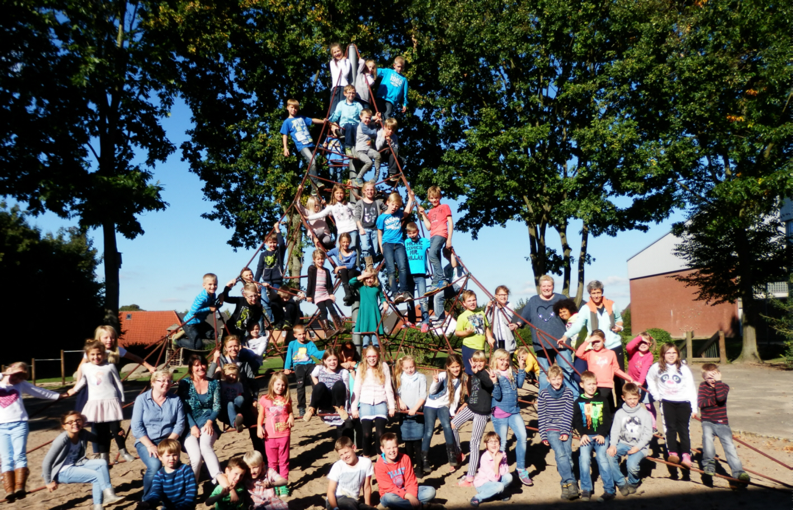
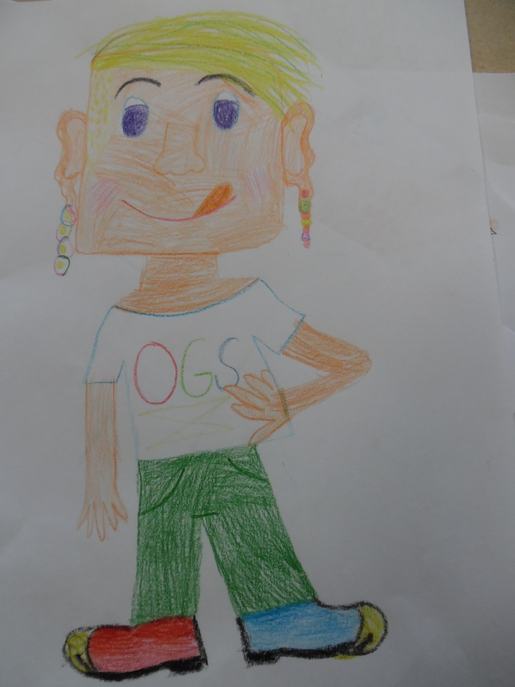

Seit 2007 gibt es an der Grundschule Nusse das Betreuungsangebot der Offenen Ganztagsschule von Montag bis Freitag in der Zeit von 12:00 bis 17:00 Uhr. Eine Frühbetreuung von 07:15 Uhr bis zum Unterrichtsbeginn ist ebenfalls möglich.
Das Angebot beinhaltet ein Mittagessen in unserer Mensa, qualifizierte Hausaufgabenbetreuung und anschließend Beschäftigung in unterschiedlichen Kursen (Tischtennis, Fußball, Werken, Basteln, Musik, Sport, Theater, Experimente, Fahrräder reparieren und gemeinsam spielen).
Die Offene Ganztagsschule hat eigene Räumlichkeiten mit einem vielfältigen Spiel- und Materialangebot. Der große Pausenhof mit vielen interessanten Spielmöglichkeiten steht uns zur Verfügung und der eigens angeschaffte Rollerfuhrpark sorgt für viel Bewegung.
Es kümmert sich ein qualifiziertes Mitarbeiterteam um die Kinder am Nachmittag. Es besteht eine intensive Zusammenarbeit mit dem Kollegium der Schule und den Betreuungskräften der offenen Ganztagsschule.
Nach dem Unterricht melden sich die Kinder in der Ganztagschule an, gehen zum Händewaschen und gemeinsam zum Essen. Danach machen sie Hausaufgaben. Die Hausaufgaben werden nach Klassenstufen getrennt in verschiedenen Räumen gemacht und von einer OGS-Mitarbeiterin unterstützt. Dann beginnen die Kurse. Es gibt verschiedene Angebote, zum Beispiel:
Unser Kurs heißt „Neugier und Naseweis“. Wir berichten über verschiedene Themen in der OGS.
Viel Spaß beim Lesen.

Text von Lotte, Marie und Elisa
Bilder von Lotte
Fotos von Tatjana